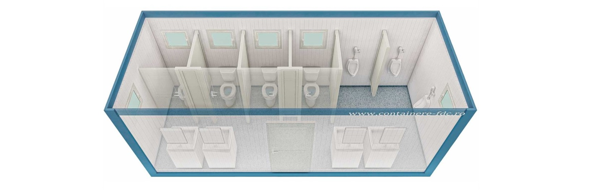

Indiferent de tipul proiectului – fie ca vorbim despre un santier de constructii, un eveniment in aer liber, un parc logistic sau un spatiu industrial – asigurarea conditiilor minime de igiena este obligatorie. In acest context, solutiile de tip container toaleta ofera o alternativa moderna, practica si usor de implementat pentru grupuri sanitare mobile sau temporare. Aceste containere sunt complet echipate, pot fi livrate rapid si instalate fara lucrari costisitoare de infrastructura.Un container toaleta este conceput pentru a oferi confort si igiena in orice mediu, fiind dotat cu instalatii sanitare, pardoseala rezistenta la umezeala, si, la cerere, cu incalzire sau sistem de apa calda. Disponibile in mai multe configuratii si dimensiuni, aceste containere se adapteaza nevoilor reale din teren, oferind o solutie completa pentru gestionarea grupurilor sanitare in mod profesionist.
Indiferent de tipul proiectului – fie ca vorbim despre un santier de constructii, un eveniment in aer liber, un parc logistic sau un spatiu industrial – asigurarea conditiilor minime de igiena este obligatorie. In acest context, solutiile de tip container toaleta ofera o alternativa moderna, practica si usor de implementat pentru grupuri sanitare mobile sau temporare. Aceste containere sunt complet echipate, pot fi livrate rapid si instalate fara lucrari costisitoare de infrastructura.
Contactați-ne pentru o ofertă detaliată adaptată nevoilor dumneavoastră.
Cere Oferta Acum